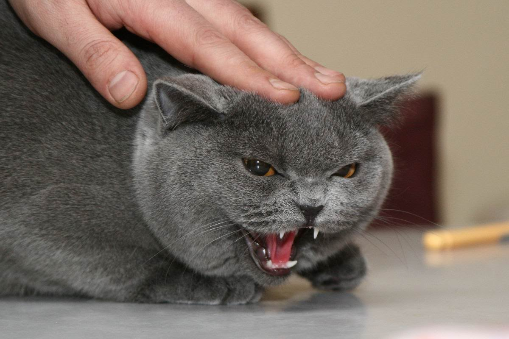
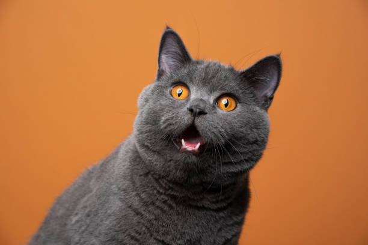

Кошка (лат. Felis catus) — домашнее животное, одно из наиболее популярных

Кошка (лат. Felis catus) — домашнее животное, одно из наиболее популярных
С точки зрения научной систематики, домашняя кошка — млекопитающее семейства кошачьих отряда хищных.

Одни исследователи рассматривают домашнюю кошку как подвид дикой кошки, другие — как отдельный биологический вид.
Кошка являясь одиночным охотником на грызунов и других мелких животных.
